Меню, пожалуйста
Другой популярной частью сайтов является меню. В основном, это список элементов, которые представляют собой простые ссылки, ведущие на другие места сайта. Давайте реализуем меню! Мы начнём со следующего кода.
<!DOCTYPE html>
<html lang="ru">
<head>
<meta charset="utf-8">
<title>Меню</title>
<link rel="stylesheet" href="main.css" media="screen">
</head>
<body>
<nav>
<ul>
<li>
<a href="index.html">Главная</a>
</li>
<li>
<a href="training.html">Обучение</a>
</li>
<li>
<a href="conferences.html">Конференции</a>
</li>
<li>
<a href="about.html">О нас</a>
</li>
</ul>
</nav>
</body>
</html>Наше меню будет состоять из четырёх элементов:
- Главная
- Обучение
- Конференции
- О нас
Мы хотим, чтобы оно выглядело так.
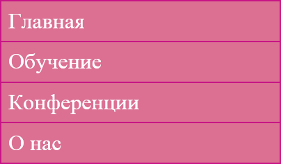
Вы могли заметить, что мы добавили новые теги <nav>, <ul> и <li>.
<nav> используется для определения всех видов навигационных функций на сайтах, которые содержат ссылки на внутреннюю или внешнюю информацию. Размещение <nav> в коде говорит «всё внутри <nav> будет использоваться для навигации по сайту».
В <nav> мы вставили тег <ul> с несколькими тегами <li>. Тег <ul> представляет собой «неупорядоченный список» (как маркированный список), а теги <li> представляют каждый отдельный компонент этого списка (маркер). При создании сайтов неупорядоченный список часто будет наиболее разумным выбором, когда дело доходит до составления страницы с меню. На самом деле, меню это вариант списка ссылок, который был создан без заданного правила относительно порядка его элементов.
С помощью кода выше, который пока не завершён, наш список должен выглядеть следующим образом.
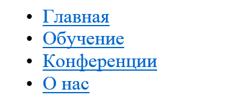
Вы, возможно, видели нечто подобное даже при создании текстового документа в редакторе, когда хотели сделать маркированный список. Без стилизации <ul>, однако, наш список просто начинается с точки. В отличие от этого наше меню может быть намного сложнее. Мы можем задать ему границы, цвет, фон и др. Каждая ссылка по умолчанию отображается синим цветом, как видно на рисунке выше.
Теперь попробуем изготовить более стильное меню через наш код CSS.
Как правило, мы начинаем с самого общего тега в HTML-коде, верно? В нашем случае код начинается с <nav>, поскольку он отвечает за наше меню. С этим тегом мало что можно сделать, поскольку данный тег напрямую не меняет внешний вид маркированного списка.
Следующий тег <ul> начинает список. Мы хотим, чтобы наш список выглядел немного иначе, чем по умолчанию. Самое главное — добавить новый фон.
nav ul {
background-color: PaleVioletRed;
}Для цвета фона мы выбрали название PaleVioletRed. Перезагрузка страницы показывает наши изменения в результате добавления этого кода.
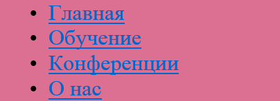
На самом деле мы применили цвет фона ко всем элементам <ul>. Это потому, что мы применяем его к тегам <nav> и <ul> с помощью следующего селектора.
nav ul {}Теперь мы хотим избавиться от круглых чёрных точек в этом списке и сделать его более похожим на меню. Мы можем скрыть их благодаря свойству list-style, как показано ниже.
nav ul {
background-color: PaleVioletRed;
list-style: none;
}Установка list-style в значение none делает список без характерных маркеров.
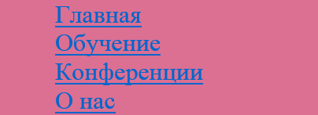
Это выглядит гораздо лучше.
Широкая область цвета удивительно большая. Мы хотим немного урезать её, используя тот же пример, что с рамкой вокруг изображения (padding).
nav ul {
background-color: PaleVioletRed;
list-style: none;
padding: 0;
}Как вы можете видеть ниже, выглядит это намного лучше, медленно приближаясь к прекрасной форме.
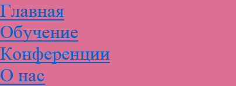
Теперь пришло время для работы с размерами. Наша навигация должна быть 200 пикселей в ширину.
nav ul {
background-color: PaleVioletRed;
list-style: none;
padding: 0;
width: 200px;
}В конце концов, мы добавим border к списку точно как на картинке. Это будет выражаться в сплошной линии толщиной 1 пиксель розового цвета.
nav ul {
background-color: PaleVioletRed;
list-style: none;
padding: 0;
width: 200px;
border: 1px solid MediumVioletRed;
}Вот результат и это выглядит здорово!
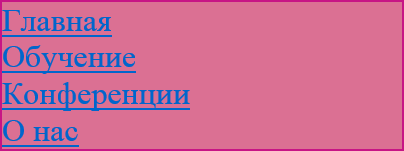
С нашей прекрасной внешней рамкой. Пришло время построить каждый отдельный элемент списка, к которому можно обратиться с помощью такого селектора CSS.
nav ul li {}Этот код ищет <nav>, затем внутри <ul> и <li>. Кажется, что каждому элементу в списке нужна своя граница.
nav ul li {
border-bottom: 1px solid MediumVioletRed;
}С помощью этого кода мы добавили border-bottom, так что каждый элемент <li> теперь имеет такой же тип границы как у внешней рамки, но только в нижней части текста.
В настоящее время наше меню должно выглядеть так.
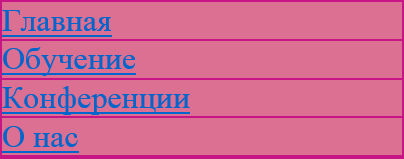
Теперь у нас две проблемы. Первая — пространство слева между границей и элементами списка. Изменим его, используя нашего знакомого padding.
nav ul li {
border-bottom: 1px solid MediumVioletRed;
padding: 5px;
}Это гораздо лучше, правда? Мы добавили padding шириной 5 пикселей между текстом и границами.
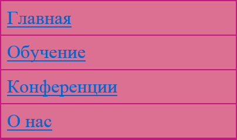
Наша вторая проблема менее заметна, но всё ещё существует в виде двойной линии в нижней части нашего меню. Это потому, что наша граница для меню добавилась к нашей границе для последнего элемента, когда мы вставили bottom-border. Помните, что мы использовали код в <ul> из <nav> для указания границы.
nav ul {
background-color: PaleVioletRed;
list-style: none;
padding: 0;
width: 200px;
border: 1px solid MediumVioletRed;
}Также вспомним, что мы устанавливаем list-style в none так, что маркеры или любые другие знаки не появляются.
list-style: none;Задав none в качестве значения мы отключаем свойство, так что оно не будет иметь никаких графических эффектов.
Проделаем то же самое, только с помощью свойства bottom-border и установив для него значение none. Однако мы хотим нацелиться только на последний пункт меню, чтобы его нижняя граница не конфликтовала с большой нижней границей.
nav ul li:last-child {
border-bottom: none;
}Результат применения этого кода сверхэффективен.
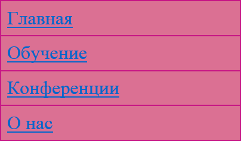
Двойная граница исчезла, всё потому, что мы нашли <ul> в <nav>, а затем выбрали в нём последний <li> и отключили нижнюю границу. Псевдо-селектор last-child указывает на последний элемент списка.
nav ul li:last-child {}Этот селектор можно перевести следующим образом:
«найдите <nav>, затем <ul> и примените все изменения к последнему элементу <li>».
Последнее, что нам нужно сделать, это настроить текст в ссылках. Вы можете создать ссылки в HTML следующим образом.
<a href="url">Набранный здесь текст ведёт на указанный веб-адрес</a>Мы используем тег <a> вместе с атрибутом href. Значением этого атрибута должен быть адрес, на который вы хотите переместить пользователя, если он щёлкает по ссылке. В нашем примере у нас есть четыре ссылки. Одна из них выглядит так.
<a href="training.html">Обучение</a>Это значит, что браузер будет показывать слово «Обучение», на которое можно щёлкнуть и затем браузер отправится на страницу, которая была сохранена в файле training.html.
Зная, что этот тег является частью кода HTML, мы можем создать специальный селектор, который ищет именно этот тег.
nav ul li a {}Вуаля!
Давайте добавим новые свойства к нашему новому селектору. Прежде всего, изменим цвет шрифта на белый.
nav ul li a {
color: white;
}Обновление браузера показывает наши новые изменения.
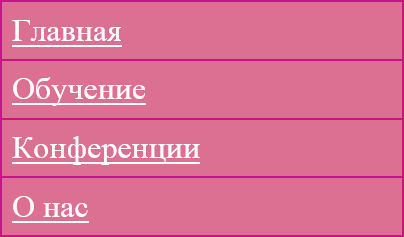
Отлично! Теперь у нас есть ссылки белого цвета. Изменим некоторые акценты. Браузер устанавливает выделение в CSS для всех ссылок в виде text-decoration: underline. Мы хотим изменить это значение, как мы уже делали это раньше со значением none.
nav ul li a {
color: white;
text-decoration: none;
}Красота! Мы завершили желаемое меню.
В качестве дополнительного замечания, если вы работаете с большим количеством ссылок, то, возможно, помните, что на многих страницах при наведении на ссылку текст подчёркивается.
Проверьте эту ссылку, которую я написал в своём Twitter (без подчёркивания).
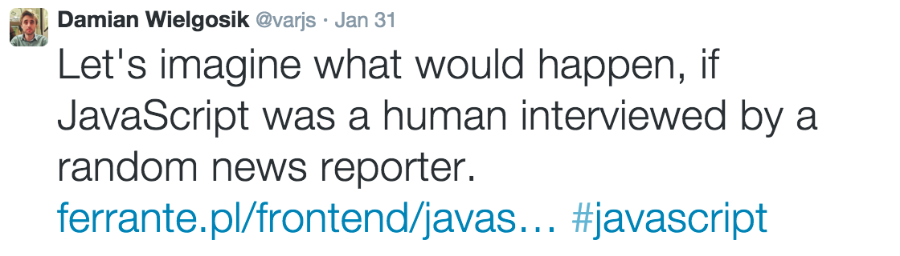
При наведении указателя мыши на эту ссылку происходит нечто интересное, о чём многие интернет-пользователи хорошо знают — текст становится подчёркнутым.
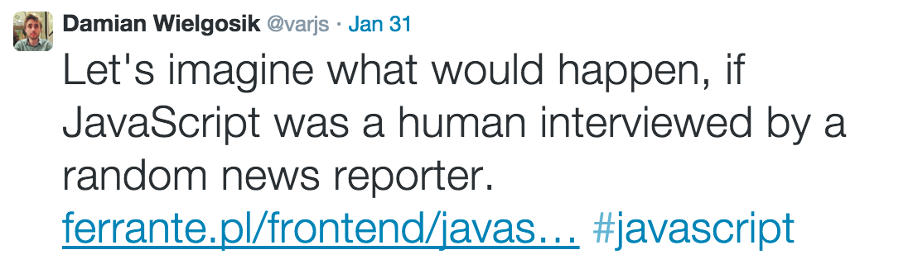
Попробуем сделать нечто подобное в нашем меню, что позволит ссылке выделиться при наведении на неё. Мы будем использовать псевдо-селектор под названием hover.
nav ul li a:hover {
text-decoration: underline;
}В этот раз мы добавили его к ссылкам <a>. Это означает, что при наведении указателя мыши на ссылку будет применяться эффект. Это также относится и к наведению на другие элементы.
div:hover
li:hover
img:hoverЭффект виден ниже, когда мы наводим курсор мыши на ссылку «Конференции».
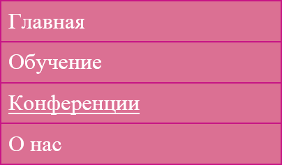
В итоге, окончательный код CSS должен выглядеть так.
nav ul {
background-color: PaleVioletRed;
list-style: none;
padding: 0;
width: 200px;
border: 1px solid MediumVioletRed;
}
nav ul li {
border-bottom: 1px solid MediumVioletRed;
padding: 5px;
}
nav ul li:last-child {
border-bottom: 0;
}
nav ul li a {
color: white;
text-decoration: none;
}
nav ul li a:hover {
text-decoration: underline;
}Недавно появившиеся псевдо-селекторы (last-child и hover) будут полезны в будущем.
В этой главе вы узнали, как использовать ссылки и вставлять их в HTML-документы. На данный момент мы использовали только адреса, ведущие на локальные файлы (например, training.html), сохранённые на вашем компьютере, но вы также можете использовать ссылки, указывающие на внешние сайты в Интернете, вроде этого.
<a href="http://twitter.com/varjs">Мой Twitter</a>Этот код в браузере будет отображаться как Мой Twitter. Обратите внимание, что адрес содержит http:// в самом начале. Это правило говорит, что каждая ссылка используемая в HTML-документе и ведущая на другой сайт, должна быть с префиксом http://. В противном случае, ваши ссылки не будут перенаправлять пользователей в нужное место.